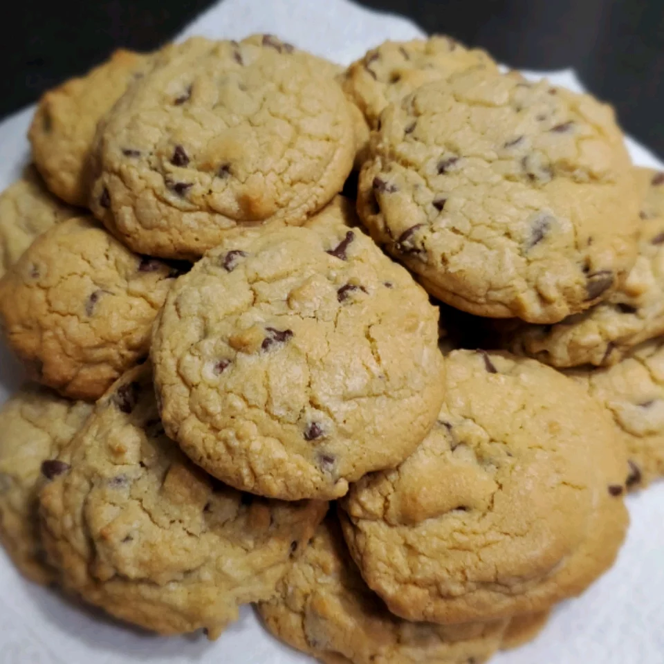

Chocolate Chip Cookies

Description
These cookies are ideal for a meal in the afternoon and very easy to make.
You'll just have to keep an eye on the time so the cookies get crispy only on the outside!
Ingredients
- 1 cup of butter, softened
- 1 cup of white sugar
- 1 cup of packed brown sugar
- 2 eggs
- 2 teaspoons of vanilla extract
- 1 teaspoon of baking soda
- 2 teaspoons of hot water
- ½ teaspoon salt
- 3 cups of all-purpose flour
- 2 cups of semisweet chocolate chips
- 1 cup of chopped walnuts
Steps
- Preheat the oven to 350 degrees F (175 degrees C)
- Cream together the butter, white sugar, and brown sugar until it smooths
- Beat in the eggs, one at the time and then stir in the vanilla
- Dissolve the baking soda in hot water and add to batter along with salt
- Stir in flour, chocolate chips and nuts
- Drop large spoonfuls of the mix onto ungreased pans.
- Bake for 10 minutes in the preheated oven until the edges are nicely browned